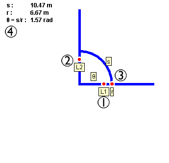

|
 |
Note: Right-clicking (cmd-click on Mac) anywhere on the applet will bring up a pop up menu that contains controls for this applet.
Reset
Clicking this button will reset the experiment to its original starting
state.
Help
Clicking this button will bring up this help page.
Edited by Jeremiah
Van Oosten on
Monday June 04, 2001 02:17:58 PM